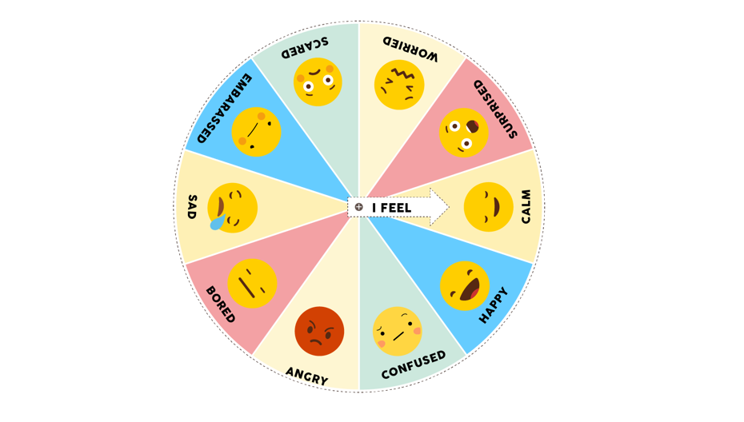

Let's Talk About Feeling Good!
What is Mental Health?
Mental health is all about feeling good about yourself and being able to handle your feelings in a healthy way. It affects how you think, feel, and act. It also helps determine how you handle stress, relate to others, and make choices.

This is an emotions wheel! It shows us different emotions we might feel.
When you're feeling overwhelmed or unsure about how you feel, the wheel can help you pinpoint the specific emotion you're experiencing.
Managing Your Feelings
- Talk to someone you trust about how you're feeling.
- Find healthy ways to express your emotions, like exercise, journaling, or creative outlets.
- Practice relaxation techniques like deep breathing or meditation.
- Get enough sleep and eat a balanced diet.
Need Help?
It's okay to ask for help if you're feeling overwhelmed or need someone to talk to. Here are some resources: